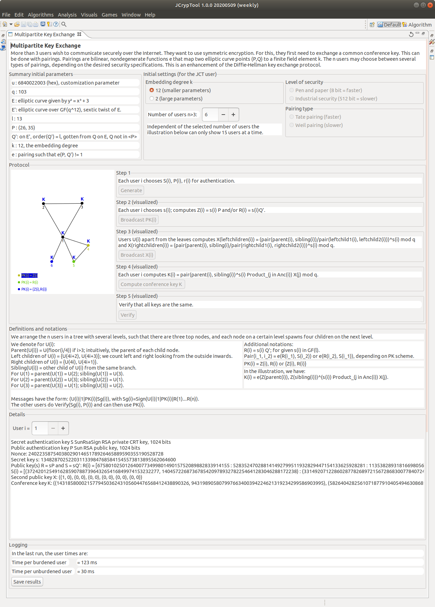
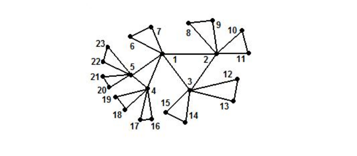

Multi-party or multi-partite key exchange (MPKE) are methods to exchange information over unsecure/public channels in order to agree on a secure common cryptographic key between more than 2 parties.
This help file describes two things:
1) Multi-Partite Key Exchange Algorithms
2) Handling Instructions: How to Use this Visualization
Multi-party or multi-partite key agreement (MPKA) [other names used in literature are group key exchange (GKE) protocol or conference key establishment protocol] are methods to exchange information over unsecure/public channels in order to agree on a secure common cryptographic key (sometimes called session key) between more than 2 parties. The first scheme of this kind was the Diffie-Hellman key exchange (DH) which described this protocol for 2 parties.
Multi-partite key agreement protocols are part of the research area of secure multi-party computation (MPC) and these protocols are relevant e.g. for video broadcasting, video conferencing (e.g. in Riot or Jitsi), mobile phones, or 3G, 4G, or 5G.
Here we consider only such multi-partite key agreement protocols which do not require any trusted third party. The original Diffie-Hellman key exchange (DHKE) was originally implemented only in finite fields of prime order. However, also other cryptographic "settings" can be used namely elliptic curves and pairings on elliptic curves.
This visualization shows for an arbitrary number of users the BD II key exchange protocol (named after its inventors Burmester and Desmedt), presented in the pairings from Weil and Tate for a degree k=2 and in pairings for a degree k=12. More details can be found in [Onete 2008].
The broadcast BD II algorithm in the pairing setting uses the elliptic curve E set by default to use the short Weierstrass equation y^2 = x^3 + 3. The according users' arrangement is shown in the Protocol illustration grouping: Given an initial triangle of 3 users, all users then have up to 4 children, exactly 1 parent, and 0 or 1 sibling. If you increment the spinner for the number of users and watch the protocol illustration, you can see how new users are arranged in this graph.
After starting the MPKE visualization you can select the pre-setting parameters for the MPKE operation using:
For the embedding degree k=2 you have further options:
The default parameters (which you also get after clicking on the restart icon) are: n=4, k=12
Then on the left, you can see the real initial parameters the program uses according to your pre-settings. Currently, these initial parameters cannot be changed manually, only indirectly by selecting the pre-settings.
In the default case (k=12) these initial parameters are the public parameters: q, l, E, E', P on E and Q' on E'.
Within the Protocol illustration grouping, each user U_i with i=1, ..., n has to perform 4 steps:
Step 5 is just for verification that all conference keys are equal (this step is only in the demonstration, it's not needed in reality).
Below the Protocol illustration grouping is a grouping with used definitions and formulars. This grouping can be extracted and folded.
Below that is the Details grouping where you can see the calculated values for each user. This grouping also can be extracted and folded.
At the bottom is the Logging grouping: It shows the needed time and contains the button Save results. Clicking on this button generates a file with the default name JCT_BDII_Log.txt. This file contains all values (pre-settings, initial parameters, generated and calculated values of all steps). Before storing, you have to tell JCT where to store this file to.
For further information about the BD II key exchange protocol please refer to: